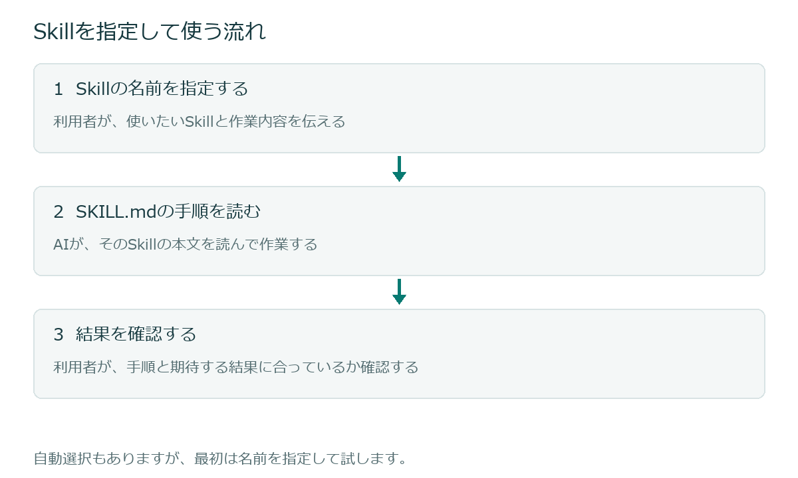

Skillは、必要なときに使う作業手順
Skill（スキル）は、特定の作業をAIに頼むための手順を、再利用できる形でまとめる仕組みです。何をするか、どんな順序で進めるか、どのような結果を出すかを書いておきます。
たとえば、会議のたびに議事録を同じ形式に整理してほしいとします。毎回チャットへ長い説明を書く代わりに、その手順をSkillにまとめ、使いたいときに呼び出せます。
SkillはAIモデルを新しく学習させるものではありません。AIが作業するときに読む手順を用意するものです。
毎回の依頼を、繰り返し使える形にする
一度だけの依頼なら、チャットで直接伝えれば十分です。同じ説明を繰り返している、出力の形式を揃えたい、と感じたらSkillにまとめる候補になります。
まとめるのは、何でもできる大きな仕組みではなく、一つの目的を持った作業です。必要な資料やプログラムを添えることもできますが、最初は文章だけで作れます。
AGENTS.md / CLAUDE.mdとは、役割が違う
ここまで学んだAGENTS.md / CLAUDE.mdは、普段の開発で守ってほしい方針を伝えるファイルです。Skillは、特定の作業を頼むときの手順をまとめます。
| 伝えること | 置く場所 |
|---|---|
| このプロジェクトで共通して守る開発方針 | AGENTS.md / CLAUDE.md |
| 必要なときに使う、特定の作業の手順 | SkillのSKILL.md |
Skillを用意しても、プロジェクト全体の方針が不要になるわけではありません。両方を目的に合わせて使います。
呼び出してから、手順に沿って作業する
Skillには名前と説明を付けます。利用者が名前を指定して使う方法と、AIが依頼内容と説明を照らし合わせて選ぶ方法があります。この教材では、まず名前を指定して使います。


Skillとして登録されていることと、今回の依頼で実際に使われたことは別です。回答の形式や作業の記録を見て、期待した手順で進んだかを確認します。
自作のSkillも、提供されているSkillもある
ツールに付属するSkillや、プラグインなどで提供されるSkillもあります。この教材では、自分の作業に合わせた小さなSkillを作ります。特別なプラグインや外部サービスは必要ありません。
自動で選ばれる条件と、読み込む情報量
通常、AIはSkillの名前や説明を確認し、必要と判断したときにSKILL.mdの本文を読みます。どんな作業向けかを説明に明記することが大切です。ただし、曖昧な依頼でも必ず自動で選ばれる、という保証はありません。
必要なときに本文を読む仕組みは情報量を整理する助けになりますが、本文を読めばその情報も会話で扱う情報量を使います。Skillに移せば文章量を気にしなくてよい、という意味ではありません。
ここで覚えておくこと
Skillは、特定の作業を必要なときに使うための手順です。まずは名前を指定して試します。
このページの公式資料
仕様確認：2026年10月4日。実習はアプリでローカルのプロジェクトを開く使い方を対象にしています。
次は、Skillの中心になるSKILL.mdの構成と、置く場所を確認します。